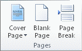
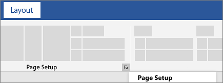
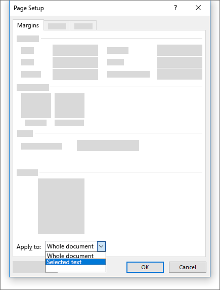

Microsoft Word offers a gallery of convenient predesigned cover pages. Choose a cover page and replace the sample text with your own.
On the Insert tab, in the Pages group, click Cover Page.

Click a cover page layout from the gallery of options.
After you insert a cover page, you can replace the sample text with your own text by clicking to select an area of the cover page, such as the title, and typing your text.
Notes:
If you insert another cover page in the document, the new cover page will replace the first cover page you inserted.
To replace a cover page created in an earlier version of Word, you must delete the first cover page manually, and then add a cover page with a design from the Word gallery.
To delete a cover page inserted with Word, click the Insert tab, click Cover pages in the Pages group, and then click Remove Current Cover Page.
To change the orientation of the whole document, select Layout > Orientation.
Choose Portrait or Landscape.
Select the content that you want on a landscape page.
Go to Layout, and open the Page Setup dialog box.

Select Landscape, and in the Apply to box, choose Selected text.
